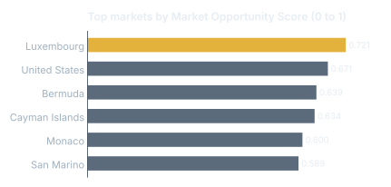
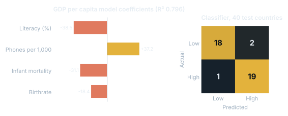
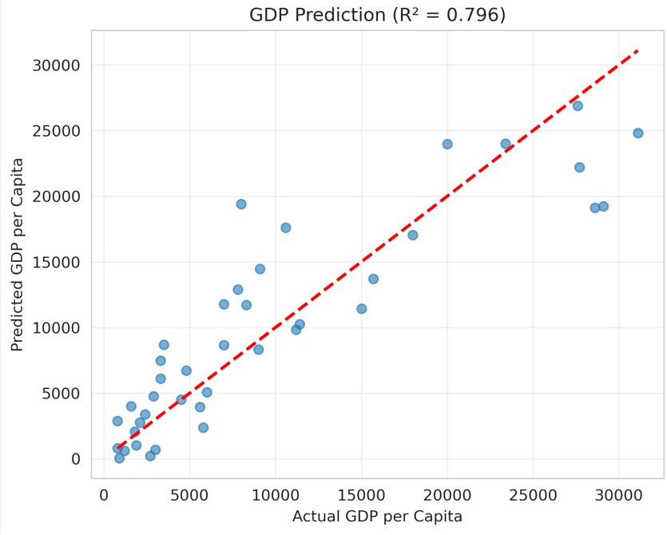

ExportMap: Export Market Finder
Team project, team of 4.
Research and healthCompleted
01Problem
Small exporters pick foreign markets by gut feel because trade, tariff and demographic data are scattered.
02Approach
Merged 7 public datasets, standardized country names and ISO codes, aligned years and scaled features. Built a 0 to 1 Market Opportunity Score, a GDP per capita regression and a logistic classifier for high vs low opportunity markets.
03Impact
A ranked market shortlist led by Luxembourg (0.721) and the United States (0.671). The GDP model reached R² 0.796 (up from 0.775) and the classifier was right on 37 of 40 test countries (92.5%, AUC 0.982).
Results



What I did
- Wealthy microstates top the list, which shows the score leans heavily on GDP per capita. For a real exporter I'd add market size so tiny markets don't dominate.
- Because the high-potential label comes from the same score, the classifier's accuracy mostly confirms the score is consistent rather than predicting something new.
- In the final GDP model, literacy has a negative coefficient once phones per 1,000 is included; the two move together, so individual coefficients shouldn't be read as causes.
Tools
Pythonpandasscikit-learnRegressionData integration